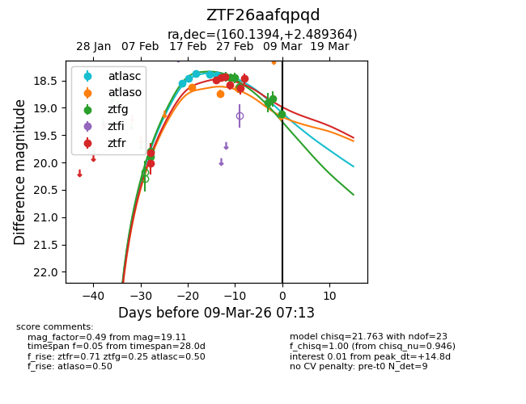
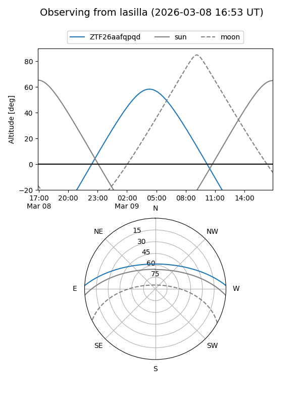
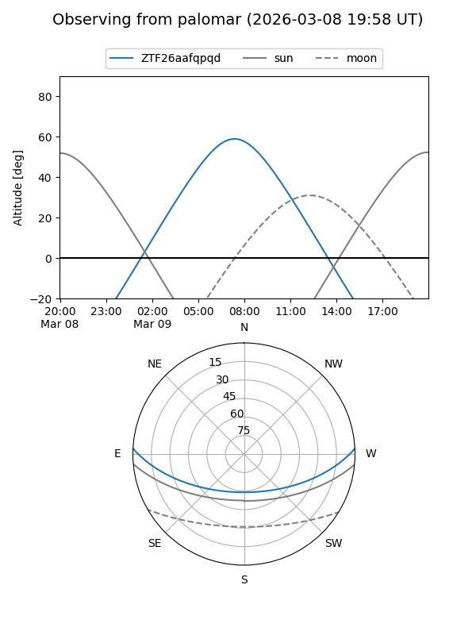
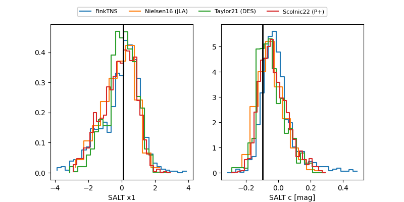

ZTF26aafqpqd
Target ZTF26aafqpqd at 2026-03-09 07:14
Aliases and brokers:
FINK: link
Lasair: link
ALeRCE: link
alt names
ZTF26aafqpqd (ztf,fink_ztf)
Coordinates:
equatorial (ra, dec) = 160.1394,+2.48936
equatorial (HMS+DMS) = 10:40:33.46,+02:29:21.71
galactic (l, b) = (245.4755,+50.16253)
Flags:
Photometry:
last atlasc=18.40, atlaso=18.65, ztfg=19.11, ztfr=18.47
5 atlasc, 3 atlaso, 9 ztfg, 8 ztfr detections
Lightcurve

Visibility


Additional plots
